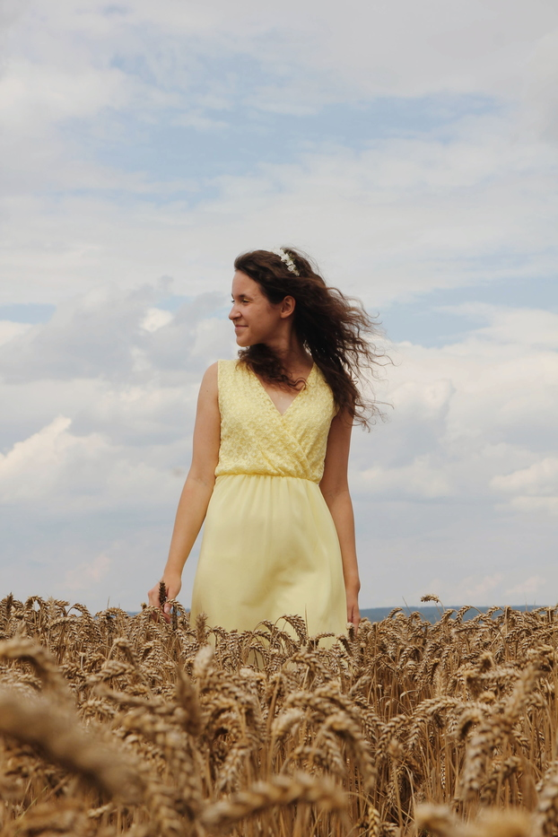

Autor: Suzanne Collins
Žánr: Dystopie
Dokázali byste přežít v divočině, když se všichni snaží o to, abyste nespatřili další úsvit? V troskách země, kdysi známé jako Severní Amerika, se rozkládá Panem s nablýskaným hlavním městem Kapitolem a dvanácti okolními kraji. Kapitol jim vládne krutou a tvrdou rukou a udržuje si jejich poslušnost tím, že je nutí, aby každý rok vysílaly jednoho chlapce a jednu dívku ve věku mezi dvanácti a osmnácti lety jako účastníky Hladových her – boje na život a na smrt živě přenášeného televizí. Šestnáctiletá Katniss Everdeenová, která bydlí sama se svou matkou a mladší sestrou, považuje účast ve hrách za rozsudek smrti, když se nabízí jako dobrovolnice, aby nahradila svou sestru, jejíž jméno bylo vylosováno pro letošní ročník. Katniss se ale už v minulosti ocitla na pokraji smrti – a je odbornicí na přežití. Aniž by chtěla, stává se soutěžící. Má-li však vyhrát, musí učinit řadu rozhodnutí, která staví přežití proti lidskosti a život proti lásce.
„Celkově Arénu smrti hodnotím jako velmi povedenou knížku. Dokázala mě šokovat, ale i dojmout. O to větší z ní mám zážitek, že během čtení jsem měla pocit, jako bych byla u všeho, co hrdinka prožívá. Zaujaly mě také detaily jako zpívající reprodrozdi, mutové nebo gesto tří prostředních prstů přitisknutých ke rtům a pak vztažených k osobě, se kterou se loučíme. Tyto drobnosti dělají knihu osobitější.“ - klubknihomolu.cz
Kateřina Fořtová

Úžasná kniha... všem doporučuji. Takovou skvělou knihu jsem už dlouho nečetla...
Barbora Podzimková
Knihu jsem četla až po shlédnutí filmového zpracování a i když jsem věděla co mě čeká, myslela jsem, že mi kniha poskytne rozšíření některých scén a dějových linií. Kniha je však téměř identická s filmem a trochu mě tedy mrzí, že jsem nejprve viděla film, protože kniha je velmi dobře napsaná a je pravdou, že mi více pomohla pochopit myšlenkové pochody a pocity hlavní hrdinky.